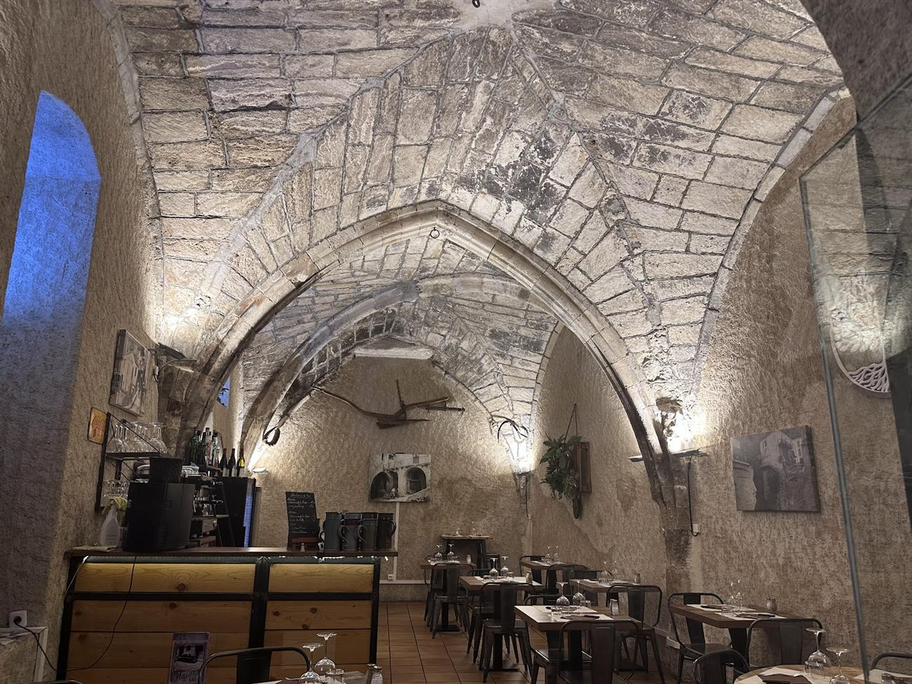
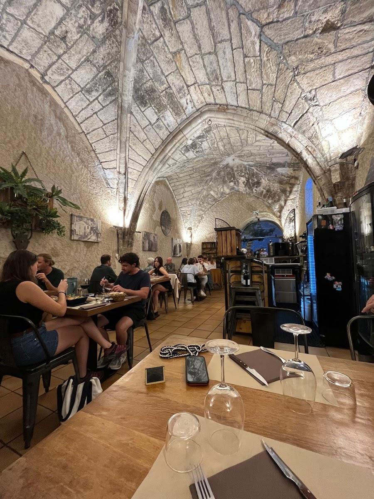
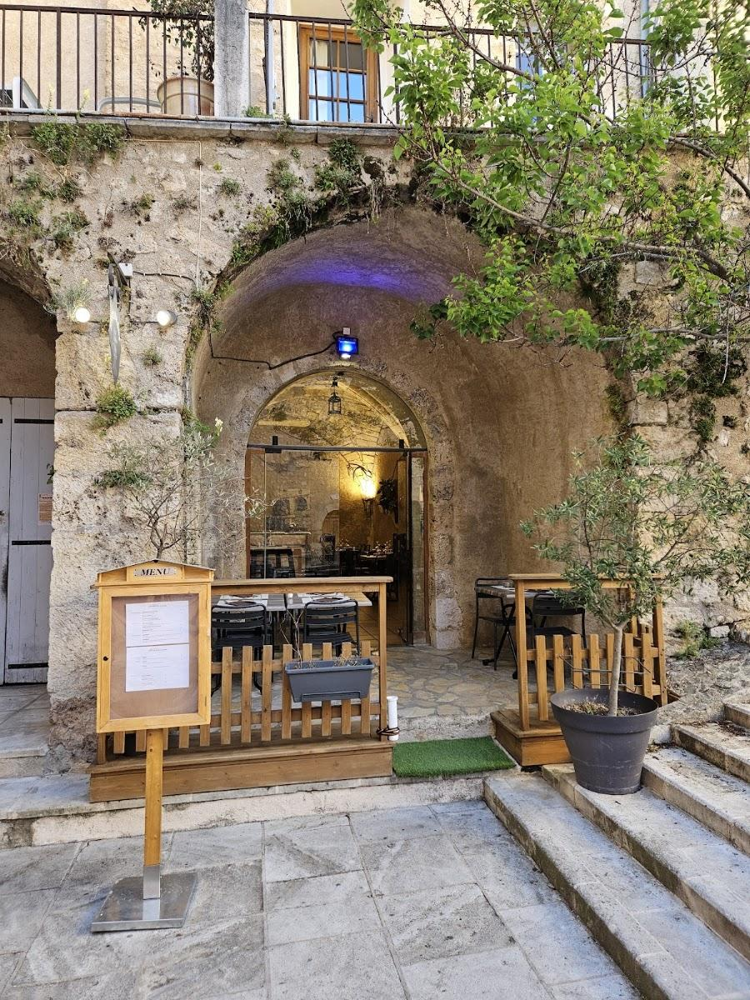
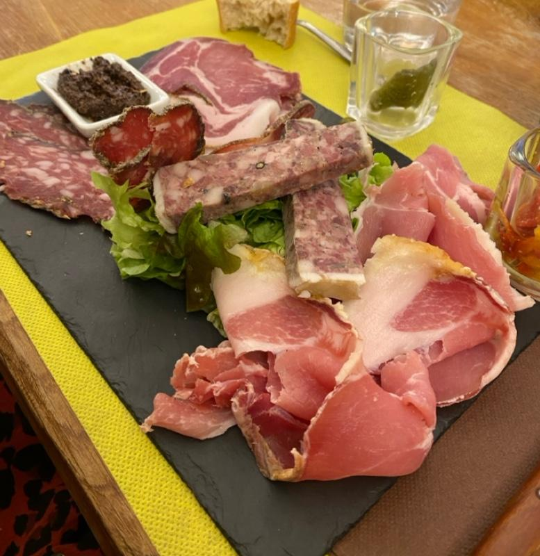

Place du Presbytère, Moustiers-Sainte-Marie
Les Tablesdu Cloître
Cuisine maison et produits du pays, servis sous la voûte gothique de l’ancien cloître.
- 4,8 / 5843 avis Google
- Fait maisonavec des produits locaux
- Salle voûtéeet terrasse sur la place
- 6 jours sur 7fermé le mercredi
Une salle voûtée au cœur du vieux Moustiers
On entre par une arche de pierre, à quelques pas de l’église Notre-Dame. Derrière la porte vitrée, une salle tout en longueur, coiffée de croisées d’ogives, garde la fraîcheur de la pierre même en plein été.
- Une salle sous des voûtes gothiques, éclairée le soir comme une chapelle.
- Des plats cuisinés sur place avec des produits du coin, servis généreusement.
- Aux beaux jours, une terrasse sur la petite place ombragée.


La carte, à l’ardoise
Elle suit le marché et les saisons. Voici ce que l’on y trouve souvent ; l’ardoise du jour vous attend sur place.
Ardoise gourmande
À l’apéritifCharcuteries et fromages de la région, à partager.
Ardoise de charcuterie
Fait maisonJambon cru, coppa, saucisson, terrine maison, tapenade.
Tartine au roquefort
La plus demandéePain de campagne gratiné, salade du moment.
Grande salade du cloître
Jambon cru, copeaux de fromage, carottes, crème de balsamique.
Souris d’agneau confite
Fait maisonCuite longuement, purée maison, tian de légumes.
Confit de canard
Peau croustillante, pommes de terre.
Volaille aux morilles
Sauce crémée, pommes duchesse, tomate farcie.
Cannellonis gratinés
Végétarien possibleSauce tomate, salade composée.
Desserts maison
Selon l’humeur de la cuisine et la saison.
Cookies maison
À emporterAvec le café ou pour la route.

Menu enfant sur demande. Allergies ou intolérances : la liste des allergènes de chaque plat est disponible auprès de l’équipe. Prix nets, service compris, affichés sur place.
En images
Cliquez sur une photo pour l’agrandir.
Ce que les clients retiennent
Le cadre, d’abord : dîner sous une voûte de pierre du Moyen Âge, ça ne s’oublie pas.
Les tartines et les viandes confites, qui se détachent à la fourchette.
Un service rapide et chaleureux, même les soirs de plein été.
Horaires
| Lundi | 12 h – 14 h 30 19 h – 21 h 30 |
|---|---|
| Mardi | 12 h – 14 h 30 19 h – 21 h 30 |
| Mercredi | Fermé |
| Jeudi | 19 h – 21 h 30 |
| Vendredi | 12 h – 14 h 30 19 h – 21 h 30 |
| Samedi | 12 h – 14 h 30 19 h – 21 h 30 |
| Dimanche | 12 h – 14 h 30 19 h – 21 h 30 |
Les horaires peuvent changer selon la saison. En cas de doute, un appel suffit.
Réserver une table
La salle est petite et se remplit vite, surtout le soir et en été. Réservez par téléphone, la veille ou le jour même.
07 43 61 33 36Les réservations sont soumises à nos conditions de réservation.
Venir
Place du Presbytère04360 Moustiers-Sainte-Marie
- Garez-vous sur l’un des parkings à l’entrée du village : le centre est piéton.
- Montez à pied par les ruelles en direction de l’église Notre-Dame.
- La place du Presbytère est juste à côté de l’église : l’entrée est sous l’arche.
Place du Presbytère, près de l’église
Le plan interactif est fourni par Google, qui dépose des cookies. Il ne s’affiche que si vous le demandez.
ou ouvrir l’itinéraire dans Google Maps